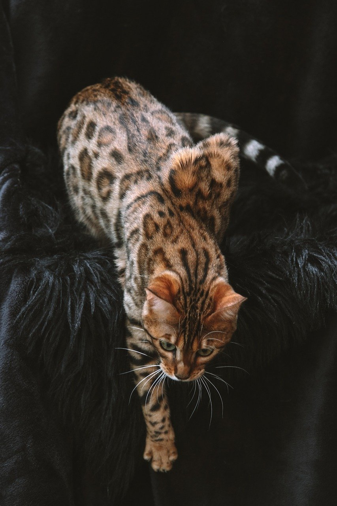
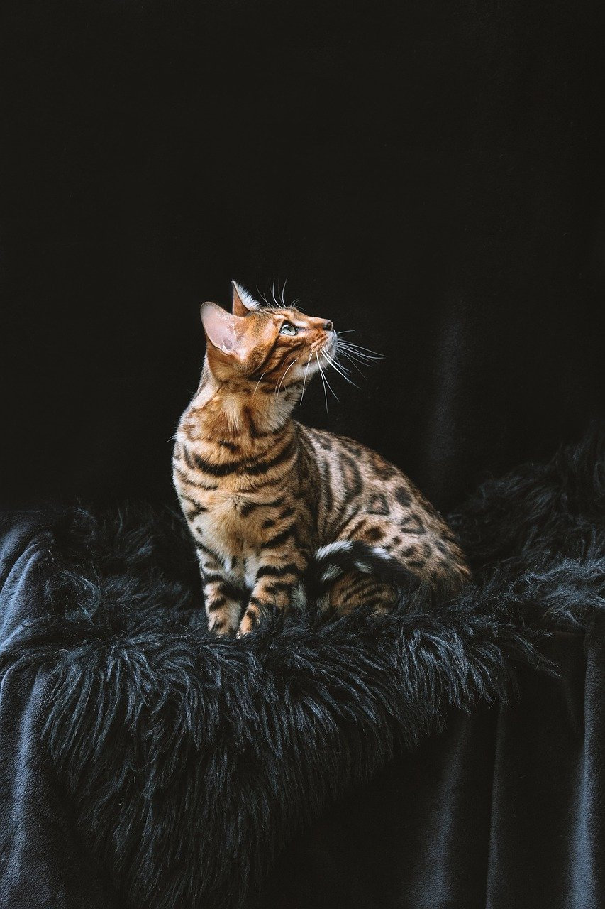
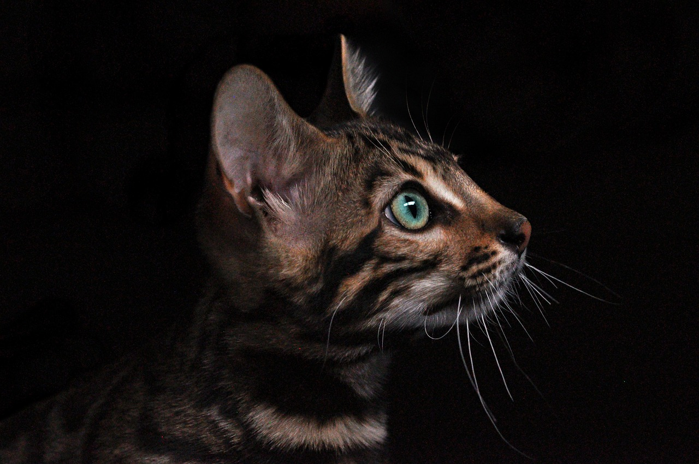
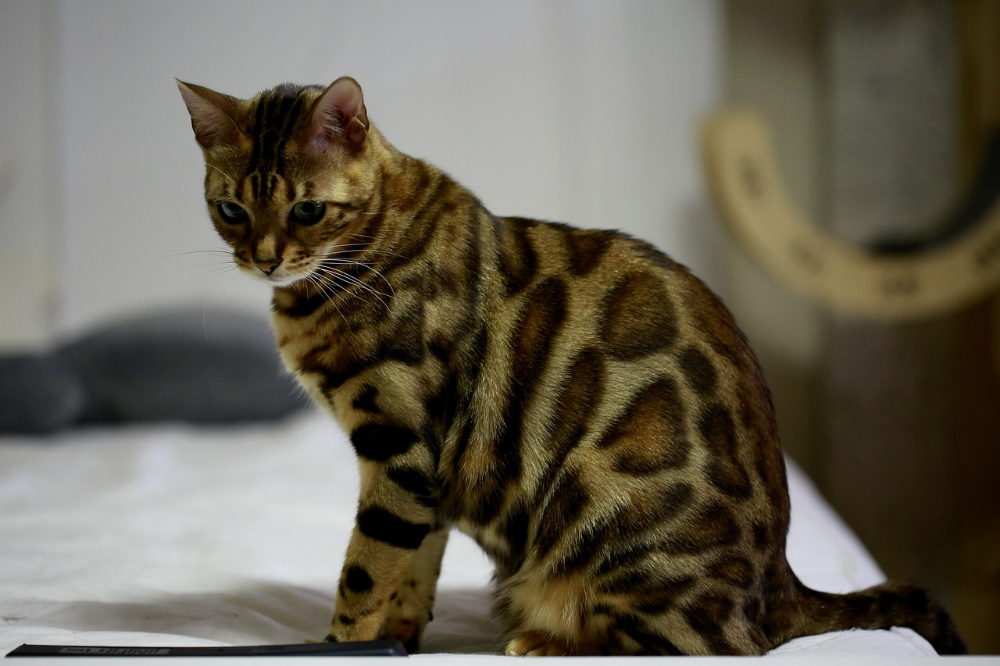
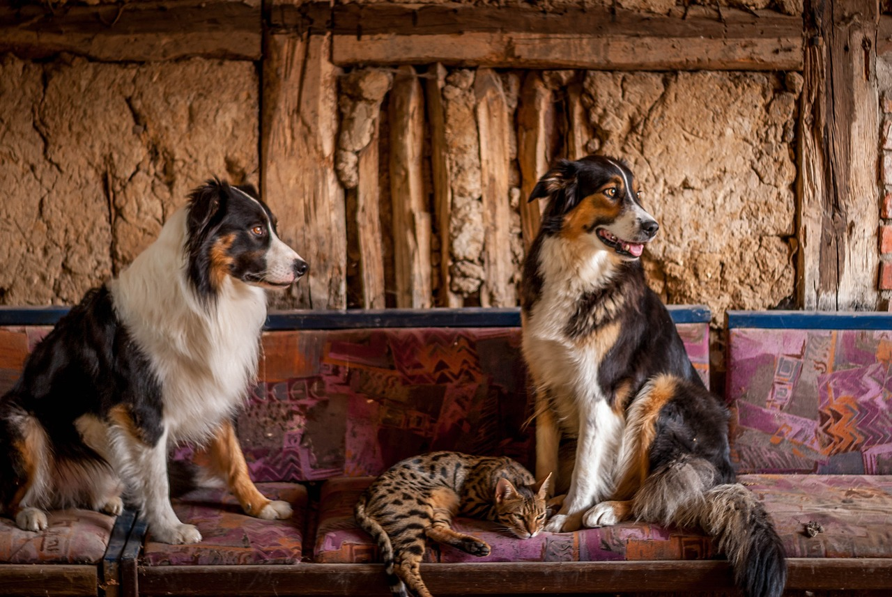

Bengal cats, known for their striking, wild-like appearance, are a breed that stands out in the feline world. They boast a luxurious coat that features large spots or marbled patterns, resembling that of a leopard, set against a background of various shades, including golden, rust, brown, and even silver. These cats are not just about looks; they are highly active and playful, known for their intelligence and affectionate nature. They thrive on interaction and stimulation, making them excellent pets for active families. Bengals often form strong bonds with their owners, showing a dog-like loyalty. Their vocal and curious nature, coupled with their majestic appearance, makes them a truly unique and captivating breed.





